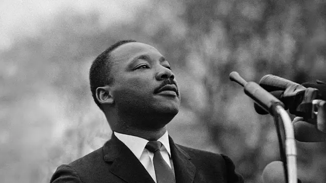
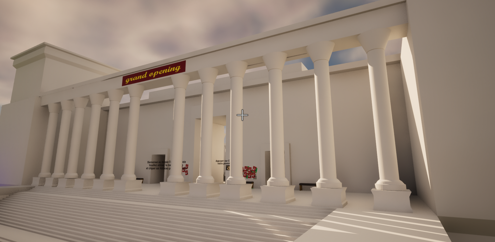
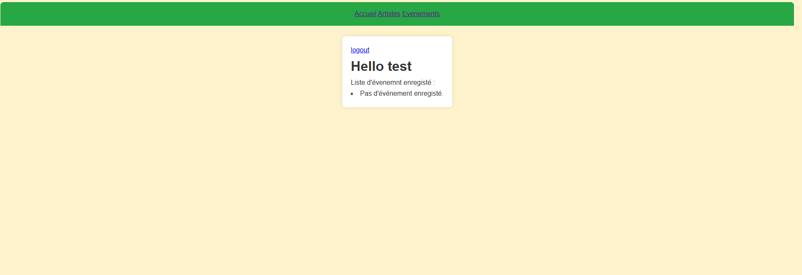
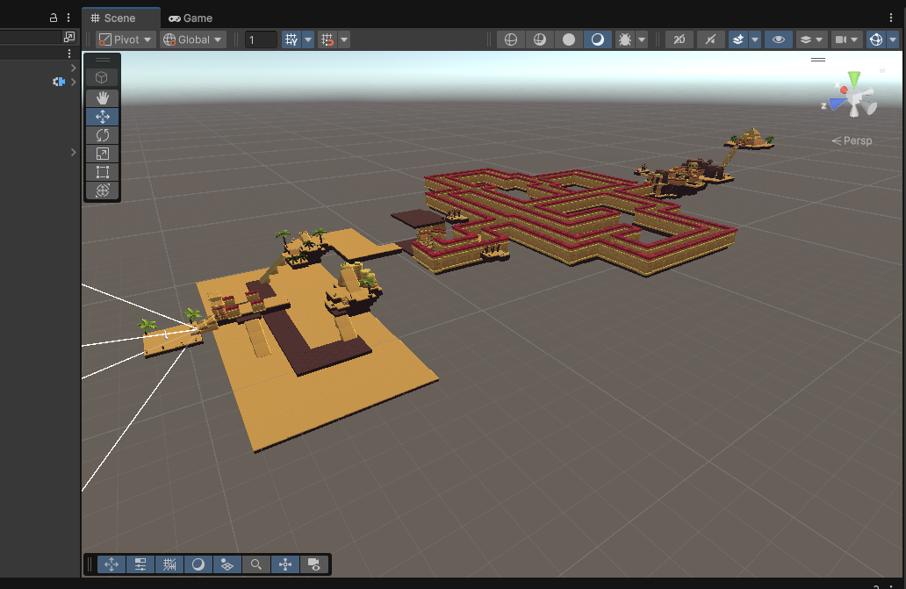

Projets
Projet 1
Projet MLK
Projet MLK
Pour commencer le but de ce projet était de faire un musée futuriste ou la dedans il parlait de l'histoire de MLK et surtout son histoire pour combattre la ségrégation. Donc nous avions un musée futuriste et puis dans celui ci nous avons pu réaliser plusieurs niveau et donc dans ces niveau nous mettions quelque histoire qui à pu ce passer pendant la ségrégation et donc pouvoir montrer le combat de MLK pendant ces années et donc c'était ça le principale but de ce projet.
Capture d'écran de l'entrée du musée futuriste
Durant ce projet nous avons commencer à réfléchir au synopsis de notre jeu pour savoir ce qu'on allais mettre et réaliser comme histoire dans notre musée. Après cela nous avons repartir les tâches entre nous pour avancer plus rapidement donc nous nous sommes reparti selon les preférences des autres et surtout selon ou la personne est meilleur en cette compétence donc par exemple il y en a qu'ils sont meilleurs en 3D donc ils ont choisi faire les models, il y a en ils avaient une facilités sur unreal donc ils ont préféré chloisir faire du BluePrint et ainsi de suite. Après tout ça tout le monde à commencer à travailler et nous regroupions chaque choses pour faire nos 6 niveau dans le musée et puis nous faisions des réunions pour savoir quoi terminer et quoi faire pour continuer les niveaux.
Capture d'écran de l'intérieur du temple
Pendant ce projet nous avions utiliser plusieurs outils de travaille. Premièrement pour tout les models 3D nous avons utiliser blender car c'est plus facile à l'utilisation que 3DS Max, pour tout ce qui est importation du musée ou des models et importation des dialogues ce sont fait sur unreal grâce au au language BluePrint.
Durant ce projet j'ai pu acquérir plusieurs compétences que ça soit les compétences techniques ou les compétences humaines. Dans les compétences techniques j'ai acquis la 3D et surtout le logiciel blender car je ne connaissais pas avant et je l'ai appris à l'utiliser pendant ce projet et donc j'ai progresser en 3D. Dans les compétences transversales et humaines j'ai beaucoup appris à communiquer en groupe, j'ai appris à bien suivre et à terminer mes tâches attribuer lors de la première réunion réaliser.
Pour conclure j'ai beaucoup appris grâce à ce projet surtout la communication en groupe et la bien entente entre tous mais aussi lors de mon passage à l'oral j'ai beaucoup appris la communication verbale et non-verbale, grâce à ça j'ai aussi progresser dans ma communication donc donc une progression sur la comprehension et l'apprentissage de la communication pour plutard lors d'un entrtien pour un job ou même pour des présentations dans l'entreprise devant nos supérieurs.
Projet 2
Projet symfony et react
Projet Symfony et React en web
Tout d'abord durant ce projet nous étions 3 à le réaliser, donc le but de ce projet était qu'on développe une application Symfony pour des évènement musicaux. En effet l'application devait permettre de pouvoir consulter et aussi gérer des artistes et des évènemants musicaux et puis pouvoir s'incrire à ces évènements. Ceci est la partie fullstack mais nous avions une Api qui nous permettait de consulter ces artistes et c'est grace à cette API que nous pouvions les afficher dans le front donc sur React.
Capture d'écran de l'acceuil de l'application
Pour commencer durant ce projet nous avons commencer à ce répatir les tâches car dans le projet nous avions plusieurs spécifications pour le fullstak donc par exemple nous avions à réaliser la navigation donc la page d'acceuil, les accessibilité pour l'utilisateur mais aussi nous avions la partie admin, user, artist, event, API et front donc ReactJs et donc nous devions répartir nos tâches selon ces spécifications, vu que nous étions 3 à faire ce projet. Alors chacun avait pris 2 spécifications à faire et puis moi j'ai pris la partie react en plus de l'artist et event. Pour ma part la partie artist je devais permettre à l'artiste d'avoir son nom, de lui donner une description et d'avoir une image et donc dans sa page on devait voir son nom, sa description, son image et la liste des évènements auxquels il participe. L'event devait avoir son nom, la date de l'évènement et le nom de l'artiste et dans sa page l'utilisateur pouvait voir le nom de l'évènement, la date, l'artiste associer et surtout la liste des utilisateur qui sont inscrit aux évènements. Puis pour terminer pour la partie React nous devions juste récupérer toutes les informations de l'API grâce à une route qu'on mettait dans notre code pour afficher dans le React la liste des artistes et évènements, puis le détails des artistes et évènements.
Capture d'écran de la page artiste
Capture d'écran de la liste des artistes sur React
Donc pour les outils utiliser ici dans ce projet, pour symfony nous avons utiliser comme IDE PHP Storm et pour le React nous avons utiliser l'IDE un peu plus connue Visual Studio Code. Pour le Symfony nous avons coder en php et pour le React c'est du JavaScript, melanger avec du html enfaite nous faisions des fichiers en JSX.
Durant ce projet web j'ai acqueris plusieurs compétences que ça soit des compétences techniques ou humaines. Donc lors de ce projet j'ai pu acquerir plusieurs de mes compétences tout d'abord celle de la communication d'équipe donc bien gérer la gestion des tâches. Mais aussi j'ai pu avoir comme compétences de coder en php et surtout d'utiliser le framework Symfony, mais aussi j'ai augmenter ma compétence sur le framework ReactJs et donc j'ai amélioré et plus pousser ma compétence en JavaScript et aussi un peu en HTML et CSS pour l'affichage et Design.
Pour conclure lors de ce projet j'ai appris plusieurs choses comme les nouveaux frameworks, mais aussi apprendre à mieux communiquer dans le groupe. Surtout le faites d'apprendre des nouveaux frameworks m'a fais découvrir de nouvelles choses et donc pouvoir plus pousser au maximum mes compétences technique que sa soit coder en JavaScript ou en PHP et surtout j'ai appris à mieux gérer ma cohésion dans le groupe au sein de ce projet.
Projet 3
Projet Snake
Projet Snake
Durant ce projet nous étions 3 à réaliser, le but de ce projet était de créer un jeu vidéo de notre choix et nous devions suivre quelque démarche comme par exemple faire un jeu accessible et éco-responsable. Donc nous avons repris du jeu Snake pass pour tout ce qui est le déplacement de notre ou même pour la reproduction de la map donc on est parti sur une map desertique. Notre histoire c'est un serpent qui est dans son temple et qui à perdu ces clé et donc le but est qu'il traverse la map pour pouvoir récuperer ces clés.